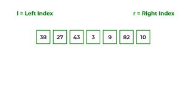

How does Merge Sort Work?
lets consider an array arr[] = {38, 27, 43, 3, 9, 82, 10} At first, check if the left index of array is less than the right index, if yes then calculate its mid point

Now, as we already know that merge sort first divides the whole array iteratively into equal halves, unless the atomic values are achieved. Here, we see that an array of 7 items is divided into two arrays of size 4 and 3 respectively.
Now, again find that is left index is less than the right index for both arrays, if found yes, then again calculate mid points for both the arrays.

Now, further divide these two arrays into further halves, until the atomic units of the array is reached and further division is not possible.

After dividing the array into smallest units, start merging the elements again based on comparison of size of elements Firstly, compare the element for each list and then combine them into another list in a sorted manner.

After the final merging, the list looks like this: